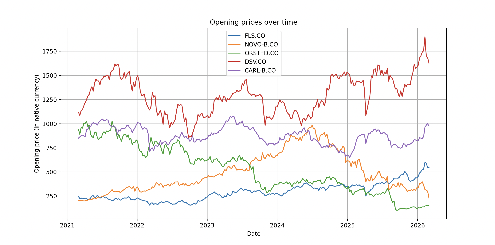
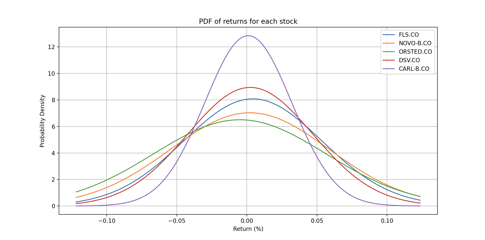
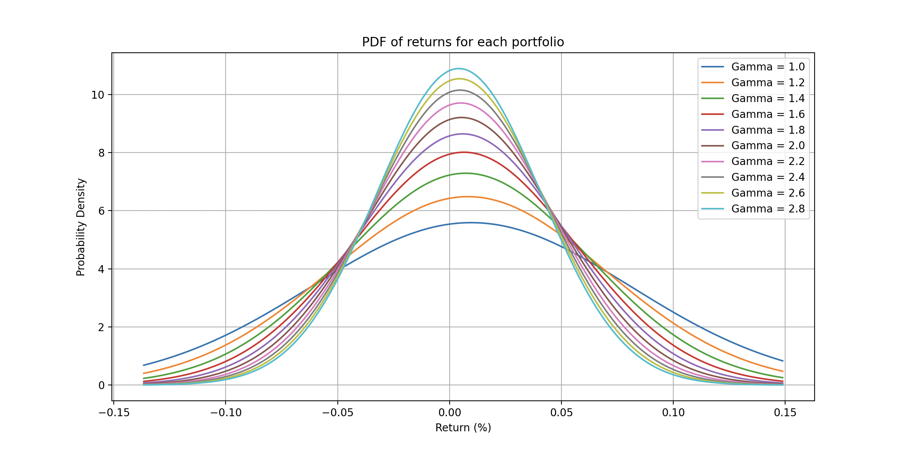
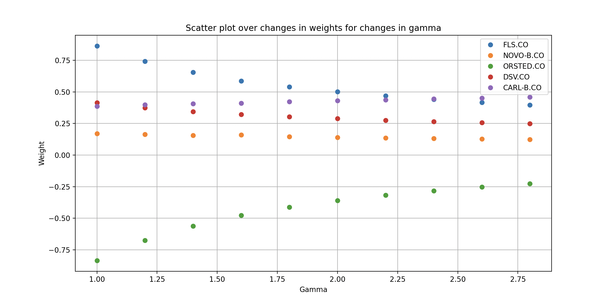

BSc. Mathematics & Economics, Aarhus University
Student with a genuine passion for the intersection of data, strategy, and quantitative trading.
Almost three years of learning across mathematics, modelling, and statistics — ability to translate complex problems into simpler solutions.
Self-assessed — scores reflect a combination of academic grades, project experience, and comparison to professional standards.
Part-time job beside of my studies to earn a bit extra money, making me able to do fun activities and travels. Working alone on shifts, main takeaway from this job is the responsibility and decision making that comes with it.
Helped High-School students gaining a better understanding of mathematics. Focused on making the learning fun and manageable by drawing parallel to the real-world and splitting problems into smaller segments.
Assisted customers and clients with advice on debt financial solutions. Achieved customer satisfaction score on 4+ out of 5 and always had top scores in performance reviews.
Interpersonal SkillsPlanned Thesis title: "Risk-Aware Forecasting of Heavy-Tailed Time-Series". Exchange semester at The University of Hong Kong (HKU), QS University ranking: 1st in Asia and 11th globally .
Completed courses such as mathematical analysis, statistics, risk, probability and mathematical finance
General High-School courses, enrolled in the "Business & Finance" class.
Top 8 of ~50 international teams (participants from Singapore, Switzerland, India and more), hosted by Nitor Energy. Built and trained an XGBoost model to predict intraday energy price spreads in the Texas power market, using features such as weather forecasts, wind speed and cloud cover. Team of two - "Delta Dynamics"
Writing a paper about the theory behind Statistical Pairs Trading, including cointegration, mean reverting stocks and more. Making a Python script with backtesting and simulation the trading strategy performance. *Still under construction*
A simple Python script that - given a list of stocks and a risk parameter - (1) plots prices over time, (2) plots PDF of each stock, (3) calculates optimal weights for a portfolio, (4) creates scatterplot of weights with different risk parameters. Worked under the (unrealistic) assumption that stock returns were normally distributed. Grade for project: 12
Delta Dynamics — Mikkel Engelbæk & Edis Møller Holm
Before anything, I'd like to say that AI was used for this project. It was used for inspiration of approaches, ideas and coding. This project was made as part of the Nitor Energy Case Competition 2026, where our team Delta Dynamics competed against approximately 50 teams from all over the world. We finished as finalists — top 8 globally.
The task was to predict unknown targets — which revealed themselves to be intraday price spreads in the Texas power market (ERCOT) — from a training dataset containing features such as weather conditions, temporal signals, and load forecasts.
We did this by using an XGBoost model and by performing feature engineering and data cleaning.
We discovered that the training dataset included some very large outliers. In order to train the model to a general market we removed the 1% highest target observations. We also discovered, that the timestamps were given as strings on the form "2023-01-01 00:00:00" which the XGBoost cannot really handle. We decomposed delivery_start into multiple new variables such as, cyclical encodings, peak hour flags, hour of day, day of week and more. Another feature added was the lag-1 which showed the (predicted) target from 1 hour ago.
# Removing top 1% target observations train <- read.csv("train.csv", stringsAsFactors = FALSE) train <- train[train$target < 300, ] # Cyclical encodings — preserves circular structure of time df$hour_sin <- sin(2 * pi * df$hour / 24) df$hour_cos <- cos(2 * pi * df$hour / 24) # Peak hours flag (07:00–20:00) df$is_peak_hour <- as.integer(df$hour >= 7 & df$hour <= 20) # Lag-1: previous period target value train$lag1[idx] <- c(NA, train$target[idx[-length(idx)]])
Why clipping? Based on another XGBoost model, we predicted the probability of being an extreme outlier. Across the test set, predicted outlier probabilities were consistently low.
Why cyclical encodings? A plain integer hour treats 23 and 0 as far apart — but they are adjacent. Sin/cos encoding preserves this circular structure.
Why a lag feature? We assume that energy prices are autocorrelated — the current price is strongly correlated with the previous period. The lag-1 feature lets the model exploit this directly.
We used a chronological 80/20 train/validation split — a random split would leak future data into training, which is realistic when predicting future price spreads. The following configuration of the XGBoost model was made by AI as Machine Learning is still an area we have to learn more about.
params <- list( objective = "reg:squarederror", eval_metric = "rmse", eta = 0.05, # slow learning rate max_depth = 8, # complex interactions subsample = 0.8, # row subsampling colsample_bytree = 0.8 # feature subsampling ) model <- xgb.train(params, dtrain, nrounds=5000, watchlist=list(train=dtrain, valid=dvalid), early_stopping_rounds=100)
🤖 Hyperparameter configuration was informed by AI — values were tested and validated against competition data.
| Parameter | Value | Rationale |
|---|---|---|
eta | 0.05 | Slow learning reduces overfitting |
max_depth | 8 | Captures complex feature interactions |
subsample | 0.8 | Row subsampling adds regularisation |
early_stopping_rounds | 100 | Stops when validation RMSE plateaus |
Because our model uses lag-1, we cannot predict all test rows at once — each previous prediction is needed to build the next row's lag. We solved this with a recursive loop:
for (j in seq_along(ord_test)) {
i <- ord_test[j]
# Seed first row with last known training target
test_rec$lag1[i] <- if (j == 1) last_train_target else pred[ord_test[j-1]]
Xi <- sparse.model.matrix(form, data = test_rec[i,,drop=FALSE])
pred[i] <- predict(model, xgb.DMatrix(data = Xi))
}
Each prediction feeds into the next in chronological order, preserving the temporal structure of the data throughout the test set.
Perhaps this should have been one of the first sections of explaining this projects. For our modelling approach we analysed the data by creating different plot and came up with the following thoughts:
The dataset contained six distinct markets (A–F), which initially suggested training a separate model for each. However, analysis revealed strong correlations across markets — price movements tended to co-move, indicating shared underlying drivers such as weather and grid load. This justified consolidating into a single global model, which also had the practical benefit of training on a larger, richer dataset.
We produced a range of exploratory plots early in the process — including boxplots, heatmaps, and target-over-time charts. These gave us an intuitive understanding of the data's structure and directly informed several decisions:
A Python-based tool that downloads real stock data, models return distributions as multivariate Gaussians, and solves a mean-variance optimization problem across varying risk aversion levels.
Given a set of stocks and their historical prices, the goal is to choose a portfolio — a vector of weights w — that balances expected return against risk. The constraint is that all weights must sum to 1.
Returns are modelled as a multivariate Gaussian, giving us a tractable framework for optimization (this is an unrealistic assumption however, as we observe heavy tails in the real world). The risk aversion parameter γ controls the trade-off: a high γ means we prefer safer portfolios even if it means lower expected returns.
Where μ is the estimated mean return vector, Σ is the estimated covariance matrix of returns, and γ is the risk aversion parameter.
get_prices() function downloads the opening prices for a number of stocks over a given time-period using yfinance.i at time j are computed as rj,i = (pj+1,i − pj,i) / pj,i. The mean return vector is estimated as μ ≃ 1/n · ∑j=1..n rj and the covariance matrix as Σ ≃ 1/n · ∑j=1..n (rj − μ)(rj − μ)T, both using formulas given in the original problem description.
solutions() function then solves the optimization problem by using the module scipy.optimize.minimize and returns the optimal weights w* that maximizes the return given the risk aversion parameter γ.



This project was made as part of my final assessment for Introduction to Programming. While the assignment was manageable, I still ran into challenges — both on the coding side and in following PEP8 rules. One early problem was fetching stock data: I tried using pandas-datareader which gave me unexpected trouble, so I switched to yfinance, which turned out to be simpler and more reliable.
A non-obvious bug came up when computing the covariance matrix: transposing with r[j].T had no effect. I found out that it was because r[j] is a 1D array in NumPy — and using .T on a 1D array does nothing. The fix was to use .reshape(-1, 1) to explicitly promote it to a column vector, making the outer product (r[j] − μ) @ (r[j] − μ).T produce the correct matrix.
Another limitation is mixed currency: a portfolio combined of international stocks makes the price history plot misleading — prices are compared directly without exchange rate normalization, something yfinance doesn't handle and would take extra effort to account for.